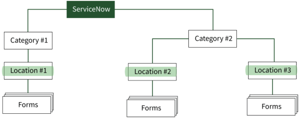

Card Sort
When working on an internal tool, target users are close
We conducted open card sorts with Lexmark employees to create ServiceNow's new information architecture. With the new IA, we eliminated unnecessary searching behaviors and reduced browsing time.

Original Pain Points
Employees saw forms that weren't relevant to their location. It led to unnecessary clicks.

The Redesign
Employees no longer need to click back and forth within the IA. Every new level helps them become closer to their goal.